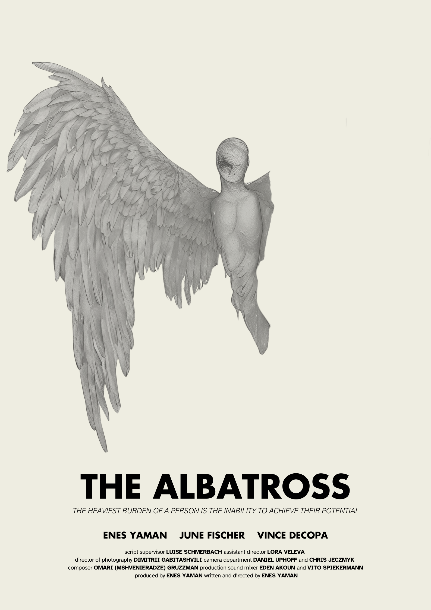
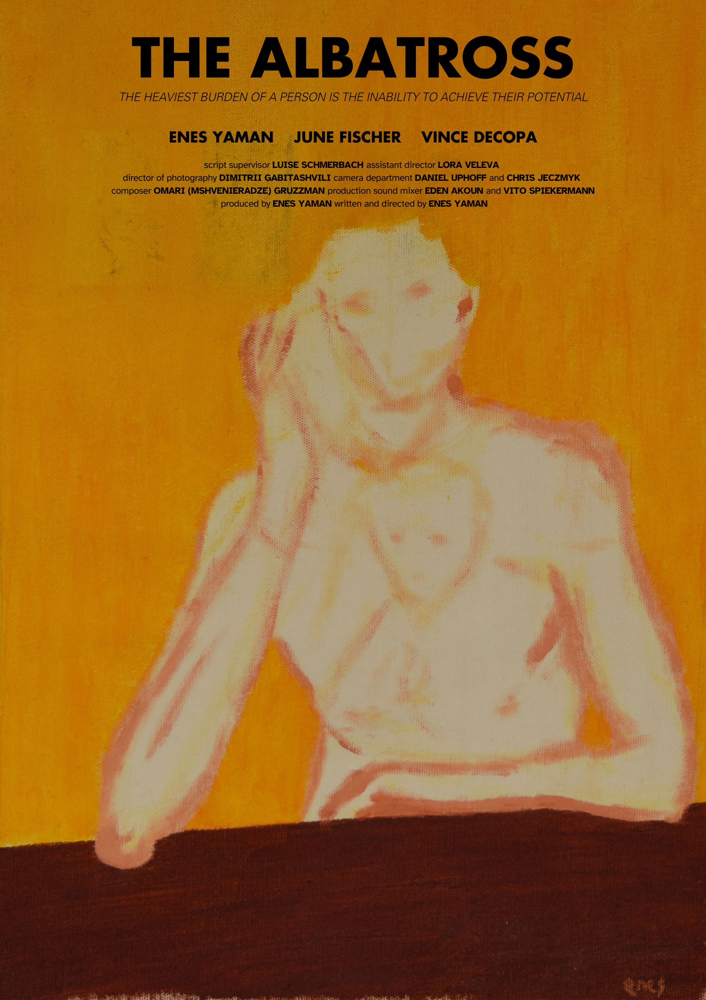

On the cold streets of Germany, Nuri, a Turkish immigrant in his late 20s, struggles to find stable work, subsisting instead on the meager deposits from collected glass bottles. When he discovers his mother (his only real connection to the world) is postponing medical care due to the economic crisis in Turkey, his search for a job becomes a desperate race. Despite countless applications and visits to the Job Center and Arbeitsagentur, he remains unemployed, barred by his lack of German language. One day he hears the frantic calls of a bird that has fallen into his building's ventilation shaft. Unable to connect with the people around him, Nuri finds a mirror in the trapped creature: a being that still has wings, yet can no longer fly. When the bird’s song eventually fades into silence, Nuri realizes it is time to leave his own cage. If the bird must go out to find the sky, then Nuri must do the same...
Almanya’nın soğuk sokaklarında, 20’li yaşlarının sonundaki Türk göçmen Nuri, düzenli bir iş bulmakta zorlanmakta; bunun yerine topladığı cam şişelerin cüzi depozito ücretleriyle hayatını idame ettirmeye çalışmaktadır. Dünyadaki tek gerçek bağı olan annesinin, Türkiye’deki ekonomik kriz nedeniyle tedavi masraflarını karşılayamayıp doktor randevularını ertelediğini öğrendiğinde, Nuri’nin iş arayışı çaresiz bir yarışa dönüşür. Sayısız başvuruya, 'Job Center' ve 'Arbeitsagentur' (İş Ajansı) ziyaretlerine rağmen, Almanca eksikliği nedeniyle bir türlü iş bulamaz.
Bir gün, odasının yanındaki havalandırma boşluğuna düşen bir kuşun telaşlı yardım çığlıklarını duyar. Etrafındaki insanlarla iletişim kurmakta zorlanan Nuri, bu kapana kısılmış canlıda kendi yansımasını bulur: Kanatları olduğu halde artık uçamayan bir varlık. Kuşun sesi zamanla sönüp sessizliğe gömüldüğünde, Nuri kendi kafesinden çıkma vaktinin geldiğini anlar. Eğer kuşun gökyüzünü bulmak için dışarı çıkması gerekiyorsa, Nuri de aynısını yapmalıdır...
Poetry in the beginning of the film
They spoke of freedom, A bird that soared, But here I am Wings clipped by words I can not speak, Skies I can not find. You said "another land", "another sea" But the city follows.. The streets, the silence, The weight of unspoken words, It follows.
- Enes Yaman
Film açılışındaki şiir
Özgürlükten bahsettiler, uçan bir kuş gibi... Ama işte buradayım. Konuşamadığım kelimelerin kırptığı kanatlarımla, gökyüzünü bulamıyorum. "Başka bir ülke" dedin, "başka bir deniz"... Ama şehir peşimi bırakmıyor. Sokaklar, sessizlik, söylenemeyen kelimelerin ağırlığı... Hepsi peşimde.
- Enes Yaman
THE ALBATROSS
“Often, as an amusement, crewmen Catch albatrosses, huge birds of the sea, Who follow, indolent companions of the voyage, The ship gliding over the salty deeps. As soon as they have placed them on the deck, These kings of the sky, awkward and ashamed, Pitiably let their large wings Drag at their sides like oars. This winged voyager, how gauche and weak he is! Once so handsome, how comic and ugly he is!”
- Charles Baudelaire
ALBATROS
“Sıklıkla eğlence olsun diye, gemi adamları yakalarlar albatrosları, koca kuşları denizlerin, geminin izindeki, miskin yoldaşları, gemi tuzlu derinliklerde kayar. Bırakıldıklarında güvertenin üstüne, maviliklerin kralları, garip ve utanmış, zavallıca o büyük beyaz kanatlarını bir çift kürek gibi sürüklerler. Bu kanatlı gezgin, ne kadar beceriksiz ve zayıf! Bir zamanlar ne kadar güzeldi, şimdi ne kadar komik ve çirkin!”
- Charles Baudelaire